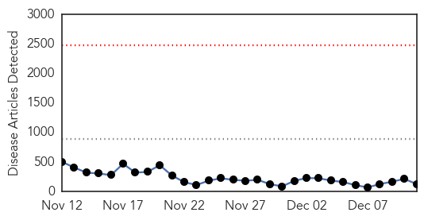
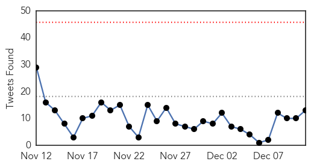
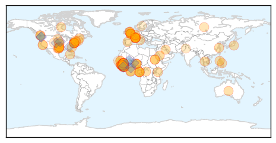
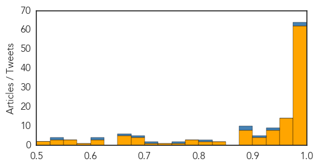

Toggle navigation
Early Warning
Daily Alerts
Ebola
Dec 11, 2014
Compare to:
-
Dengue Fever
Hemmorhagic Fever
Mold/Fungal Infection
Influenza
Meningitis
Pertussis / Whooping Cough
Middle East Respiratory Syndrome
Cholera
Hepatitis
Chikungunya
Yellow Fever
Bubonic Plague
West Nile Virus
Swine Flu
Measles
Unknown
Mumps
30 Day Trends
Web: 0
alerts
, 0
warnings
Twitter: 0
alerts
, 0
warnings
Top Articles:
Showing top 50 articles...
1.000
American nurse exposed to Ebola to be admitted to Maryland hospital
1.000
Previously Unknown Ebola Outbreak Kills Dozens in Sierra Leone
1.000
Surge in Ebola infections leads to lockdown in eastern Sierra Leone
1.000
Sierra Leone locks down new Ebola hotspot in the east
1.000
Previously Unknown Ebola Outbreak Kills Dozens in Sierra Leone
1.000
Ebola death toll climbs to 6,388 as Sierra Leone cases soar
1.000
Sierra Leone area to hold 2-week Ebola ‘lockdown’
1.000
Health officials in Sierra Leone fear Ebola outbreak may be worse than first thought after finding scores of corpses stacked in rural hospital
1.000
Sierra Leone locks down new Ebola hotspot in the east
1.000
Ebola Fast Facts
1.000
Sierra Leone diamond zone hit by Ebola outbreak
1.000
WHO: Ebola virus death toll rises to 6,388
0.999
Ebola outbreak: Virus still 'running ahead of us', says WHO
0.999
‘Grim scenes’ from Ebola outbreak show need to rebuild West African health care
0.999
Federal health leader discusses data, Ebola readiness in Charleston
0.999
Headlines, News, The Philippine Star
0.999
Experts Slam Christie on Ebola Response, Air Concerns About Future Outbreaks
0.999
Ebola spike seen in Sierra Leone’s diamond zone - Africa
0.999
Sierra Leone Diamond Zone Hit By Largely Hidden Ebola Outbreak
0.999
Bodies of Ebola victims found piled up in Sierra Leone hospital
0.999
Only the dead left in Kono hospital ward
0.999
Time names Ebola fighters as 2014 'person'
0.999
Ebola team honored by Time
0.999
Spike in Ebola outbreaks underlines danger of complacency
0.999
UN says several months needed to control Ebola
0.999
Democratic Republic of the Congo: The country that knows how to beat Ebola - Democratic Republic of the Congo
0.999
UN says several months needed to control Ebola - MyNorthwest
0.998
Sierra Leone Hits Back at Ebola Outbreak Claims
0.998
Ebola fighters named 'TIME's Person of the year 2014'
0.998
Liberia: Ebola outbreak contained in Lofa County, MSF hands over activities
0.998
Time magazine names Ebola fighters as Person of the Year
0.998
Time names Ebola fighters as ‘person’ of 2014
0.998
WHO: “Sierra Leone reacts swiftly in the face of desperate need”
0.997
State putting together Ebola hospital network; FMC voluntarily preparing as Tier 2 facility
0.997
Prevention is better than cure
0.997
Two Ebola shots may be better than one
0.997
Ebola lockdown in eastern Sierra Leone mining district
0.996
Ebola fighters Time’s Person of the Year
0.996
American Nurse Exposed to Ebola to be Monitored At Maryland Hospital
0.995
Ebola patient to stay under lens
0.995
UN says intense Ebola response needed for Western Area
0.994
Red Cross urges vigilance over Ebola spread during holiday season
0.994
Ebola nurse Nina Pham humbled to be among others as Time's Person of the Year
0.993
WHO, Doctors Without Borders Praise Ebola Fighters Victory
0.993
Tiverton Doctor Named a TIME's 'Person of the Year'
0.990
Ebola vaccine trial suspended after patients report suffering joint pain
0.990
US nurse exposed to Ebola arrives at NIH
0.990
Red Cross urges vigilance to avert holiday spike in Ebola cases
0.989
Canada at the forefront of Ebola response, shares best practices with international partners
0.989
Red Cross urges vigilance to avert holiday spike in Ebola cases
Top Tweets:
0.988
Ebola Update: 17908 confirmed probable and suspected cases of Ebola in 3 most affected countries. 6373 reported deaths. EbolaResponse
0.984
RT: Ebola Update: 17908 confirmed probable and suspected cases of Ebola in 3 most affected countries. 6373 reported deaths. Eb…
0.927
This outbreak has claimed lives of more health care workers than any other Ebola outbreak in history. UnitedAgainstEbola ISurvivedEbola
0.923
We’ve completed 100 infection control trainings so far in Ebola affected countries (16 in Liberia; 66 in Sierra Leone; 18 in Guinea.)
0.898
Text "STOP EBOLA" to *7979* to make your contribution towards Kicking Ebola out of Africa AfricaAgainstEbola Ubunifu
0.895
RT: We’ve completed 100 infection control trainings so far in Ebola affected countries (16 in Liberia; 66 in Sierra Leone; 1…
0.803
Sierra Leone bodies found piled up in Kono scale of the Ebola outbreak may have been underreported.
http://t.co/dQUbnKlkpy
0.760
RT: Proud of USPHS & health care workers around the world courageously combating Ebola. TimePersonOfTheYear…
0.715
More than 13200 individuals & 600 master trainers now have infection control training in Ebola affected countries.
0.686
RT: Do you think the media has clearly been telling thestory of the African response to Ebola? @ElbowOutEbola
0.670
Sierra Leone bodies found piled up in Kono raising fears that the scale of the Ebola outbreak was underreported.
http://t.co/8nVITQCHrE
0.605
RT: Mother & child paediatric centre Sierra Leone. The centre remains open throughout Ebola outbreak. http://…
0.537
RT: Fascinating.Empty seats and no cameras for hearing on Ebola & public health:threatslessons learnedand preparedness http://…
Web/News Articles

Tweets

Article Locations

Article Confidences
